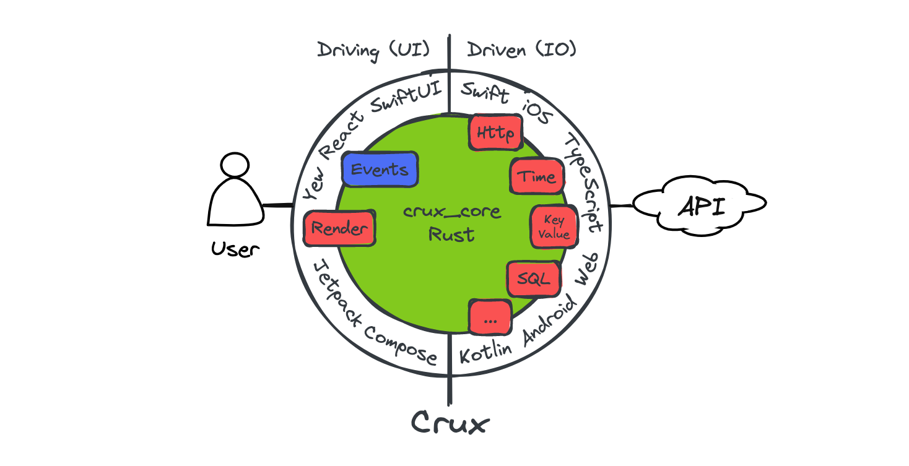

Overview
Crux is a framework for building cross-platform applications with better testability, higher code and behavior reuse, better safety, security, and more joy from better tools.
It splits the application into two distinct parts, a Core built in Rust, which drives as much of the business logic as possible, and a Shell, built in the platform native language (Swift, Kotlin, TypeScript), which provides all interfaces with the external world, including the human user, and acts as a platform on which the core runs.

The interface between the two is a native FFI (Foreign Function Interface) with cross-language type checking and message passing semantics, where simple data structures are passed across the boundary.
To get playing with Crux quickly, follow the Getting Started steps. If you prefer to read more about how apps are built in Crux first, read the Development Guide. And if you'd like to know what possessed us to try this in the first place, read about our Motivation.
There are two places to find API documentation: the latest published version on docs.rs, and we also have the very latest master docs if you too like to live dangerously.
- crux_core - the main Crux crate: latest release | latest master
- crux_http - HTTP client capability: latest release | latest master
Crux is open source on Github. A good way to learn Crux is to explore the code, play with the examples, and raise issues or pull requests. We'd love you to get involved.
You can also join the friendly conversation on our Zulip channel.
Design overview

The architecture is event-driven, based on event sourcing. The Core holds the majority of state, which is updated in response to events happening in the Shell. The interface between the Core and the Shell is message-based.
The user interface layer is built natively, with modern declarative UI frameworks such as Swift UI, Jetpack Compose and React/Vue or a WASM based framework on the web. The UI layer is as thin as it can be, and all other application logic is performed by the shared Core. The one restriction is that the Core is side–effect free. This is both a technical requirement (to be able to target WebAssembly), and an intentional design goal, to separate logic from effects and make them both easier to test in isolation.
The core requests side-effects from the Shell through common capabilities. The basic concept is that instead of doing the asynchronous work, the core describes the intent for the work with data, and passes this to the Shell to be performed. The Shell performs the work, and returns the outcomes back to the Core. This approach is inspired by Elm, and similar to how other purely functional languages deal with effects and I/O (e.g. the IO monad in Haskell). It is also similar to how iterators work in Rust.
The Core exports types for the messages it can understand. The Shell can call the Core and pass one of the messages. In return, it receives a set of side-effect requests to perform. When the work is completed, the Shell sends the result back into the Core, which responds with further requests if necessary.
Updating the user interface is considered one of the side-effects the Core can request. The entire interface is strongly typed and breaking changes in the core will result in build failures in the Shell.
Goals
We set out to find a better way of building apps across platforms. You can read more about our motivation. The overall goals of Crux are to:
- Build the majority of the application code once, in Rust
- Encapsulate the behavior of the app in the Core for reuse
- Follow the Ports and Adapters pattern, also known as Hexagonal Architecture to facilitate pushing side-effects to the edge, making behavior easy to test
- Separate the behavior from the look and feel and interaction design
- Use the native UI tool kits to create user experience that is the best fit for a given platform
Path to 1.0
Crux is used in production apps today, and we consider it production ready. However, we still have a number of things to work on to call it 1.0, with a stable API, and other things one would expect from a mature framework.
Below is a list of some of the things we know we want to do before 1.0:
- Improved documentation, code examples, and example apps for newcomers
- Improved onboarding experience, with less boilerplate code that end users have to deal with
- Better FFI code generation to enable support for more languages (e.g. C#, Dart, even C++...) and in trurn more Shells (e.g. .NET, Flutter) which will also enable Desktop apps for Windows
- Revised capabilities and effects to allow for better, more natural app composition in larger apps, for composing capabilities, and generally for a more ergonomic effect API overall
Until then, we hope you will work with us on the rough edges, and adapt to the necessary API updates as we evolve. We strive to minimise the impact of changes as much as we can, but before 1.0, some breaking changes will be unavoidable.